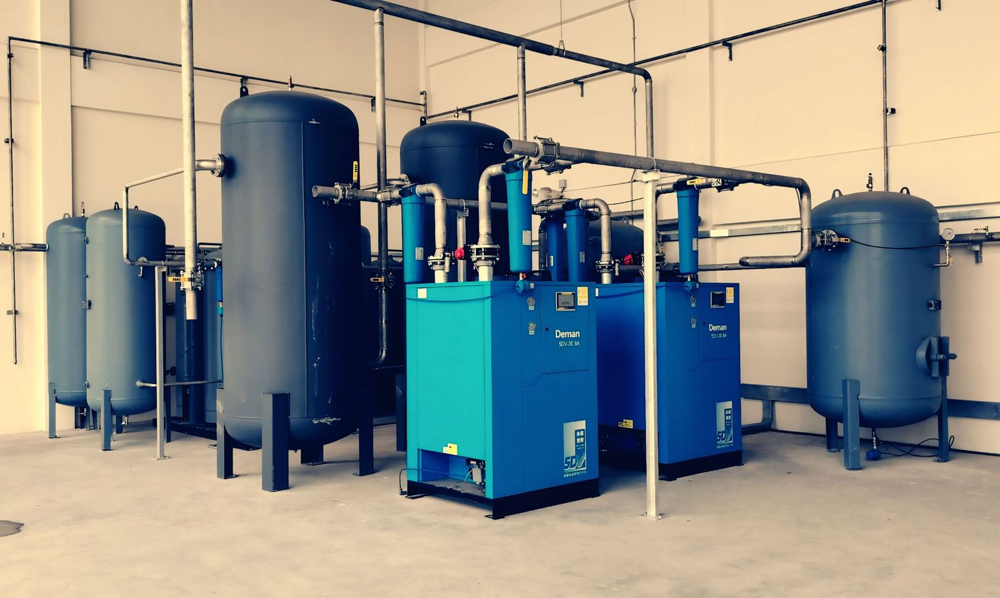
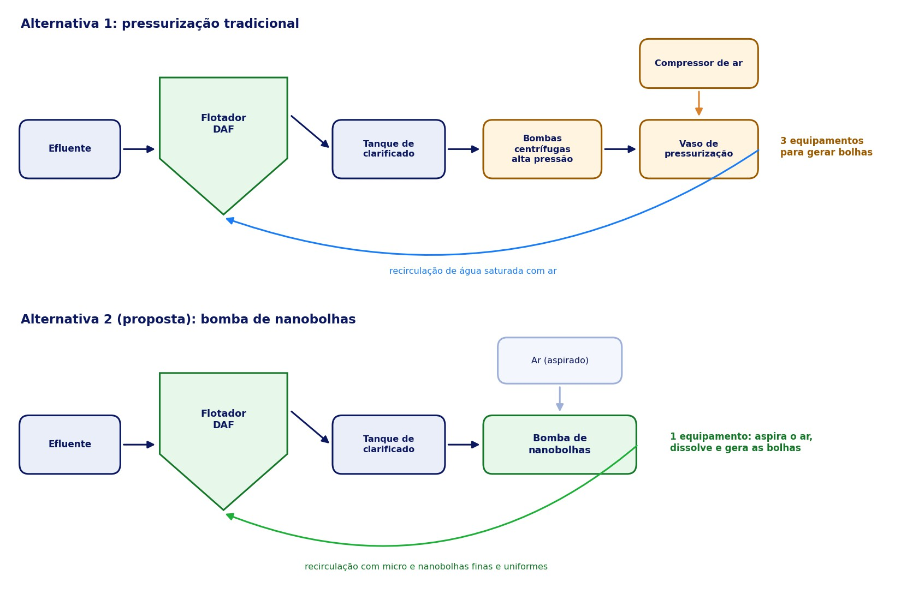
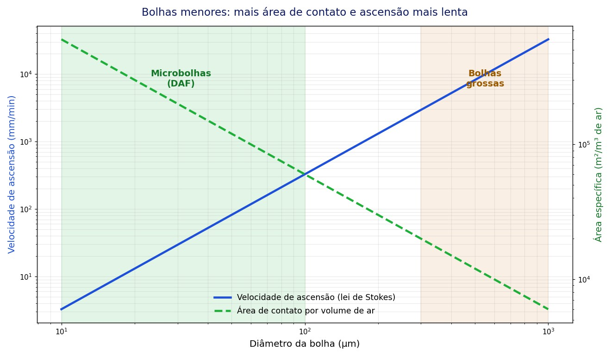
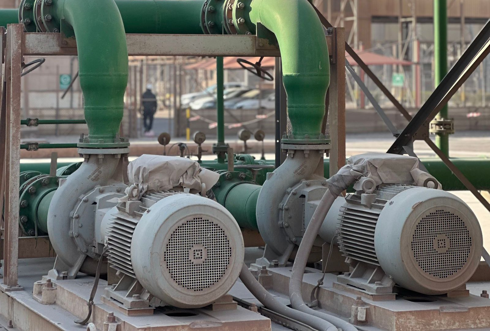

Problema / desafio do cliente
Em uma central de tratamento de efluentes no estado de São Paulo, uma linha dedicada a efluentes oleosos (emulsões e borras de indústrias químicas, petroquímicas e de acabamento de metais) opera com um flotador por ar dissolvido (DAF) cônico.
A separação óleo-água não era eficiente: havia arraste de sólidos suspensos para o clarificado e baixo rendimento do tratamento físico-químico. O objetivo era aumentar a remoção de sólidos, óleos e fenóis sem substituir o flotador existente, atuando na forma de injeção de ar.
Contexto e características do processo
O sistema de geração de bolhas era do tipo tradicional, com recirculação pressurizada:
- o clarificado do DAF é acumulado em um tanque aberto;
- bombas centrífugas de alta pressão recirculam esse líquido;
- um vaso de pressurização alimentado por compressor de ar dissolve o ar na água;
- ao ser despressurizada na entrada do flotador, a água libera as bolhas que arrastam os sólidos para a superfície.
A linha opera com vazão diária moderada e relativamente estável, e os equipamentos já tinham vários anos de operação.

Diagnóstico e dados analisados
A GETA fez o levantamento de engenharia básica do sistema, com inspeção de campo e análise das folhas de dados do flotador, do tanque de clarificado, das bombas e do vaso de pressurização. Os principais gargalos identificados foram:
- Baixa saturação de ar na corrente de recirculação, que limita a quantidade de bolhas disponíveis para a flotação.
- Bolhas grandes e heterogêneas: sobem rápido, têm menos área de contato e capturam menos partículas finas e gotículas de óleo.
- Muitos equipamentos para uma única função (bombas, compressor e vaso de pressão), com mais consumo de energia, manutenção e pontos de falha.
- Tanque de clarificado exposto ao ar, o que interfere na operação da recirculação.
Metodologia utilizada
- Levantamento de campo e registro fotográfico do flotador, tanques, bombas e vaso de pressurização.
- Análise das condições de operação das bombas atuais: vazão, altura manométrica, NPSH, rendimento e potência.
- Levantamento dos dados de projeto do vaso de pressurização (pressões de projeto e de operação e código construtivo).
- Análise da vazão diária da linha para definir a capacidade de recirculação.
- Avaliação técnica da substituição por bombas de nanobolhas, em conjunto com um fornecedor especializado.
- Definição dos requisitos técnicos e da base para o projeto executivo.
Solução de engenharia desenvolvida
Foram comparadas duas alternativas: manter e otimizar a pressurização tradicional ou substituir o conjunto bombas centrífugas + compressor + vaso de pressurização por bombas de nanobolhas (bombas multifásicas gás-líquido). A alternativa proposta é a de nanobolhas:
- a bomba aspira o ar diretamente e o dissolve sob pressão no próprio corpo do equipamento;
- na despressurização, gera micro e nanobolhas finas e uniformes, com muito mais área de contato com as partículas e gotículas de óleo;
- a recirculação vai direto ao flotador, sem compressor nem vaso de pressão;
- o flotador existente é mantido: trata-se de um retrofit do sistema de geração de bolhas.

Tecnologias e processos envolvidos
Na flotação por ar dissolvido (DAF), microbolhas aderem a sólidos, flocos e gotículas de óleo e os levam até a superfície, onde formam um lodo flotado que é removido. O desempenho depende diretamente do tamanho e da quantidade de bolhas: quanto menores, maior a área de contato por volume de ar e mais lenta a ascensão, o que aumenta o tempo de contato com as partículas.
As bombas de nanobolhas integram em um único equipamento a aspiração do ar, a dissolução sob pressão e a geração das bolhas, simplificando o sistema de saturação.
Modelagem, simulação e ferramentas computacionais
- Avaliação hidráulica das bombas atuais (curva, ponto de operação, NPSH e potência) para compatibilizar a nova bomba com a recirculação existente.
- Balanço de ar e saturação da corrente de recirculação, com base na relação ar/sólidos usada no projeto de flotadores.
- Análise da vazão diária da linha (distribuição e valores de referência).
- Fundamentos de tamanho de bolhas: velocidade de ascensão e área específica em função do diâmetro.

Resultados obtidos
A engenharia básica foi concluída e encaminhada à engenharia do cliente e ao fornecedor, para o desenvolvimento conjunto do projeto executivo. Os resultados esperados com a substituição são:
- Maior saturação de ar e bolhas menores e mais uniformes, melhorando a remoção de sólidos suspensos, óleos e graxas e fenóis.
- Sistema mais simples: de três equipamentos para gerar bolhas (bombas, compressor e vaso de pressão) para um único tipo de equipamento.
- Menos manutenção e eliminação de um vaso de pressão e de um compressor na operação.
- Aproveitamento do flotador existente, sem obras de grande porte.
CAPEX/OPEX e análise técnico-econômica
| Critério | Pressurização tradicional | Bomba de nanobolhas |
|---|---|---|
| Equipamentos para gerar bolhas | Bombas + compressor + vaso de pressão | Bomba de nanobolhas |
| Tamanho das bolhas | Maiores e heterogêneas | Micro e nanobolhas, finas e uniformes |
| Manutenção | Mais pontos de falha | Mais simples |
| Vaso de pressão | Necessário (inspeção periódica) | Dispensado |
| Investimento | Existente | Troca de equipamentos, mantendo o flotador |
A análise econômica detalhada (investimento, consumo de energia e manutenção) faz parte do projeto executivo desenvolvido com o fornecedor.
Escopo e responsabilidades da GETA
A GETA atuou na supervisão técnica do projeto, sendo responsável por:
- diagnóstico do desempenho do DAF e do sistema de saturação;
- levantamento de campo e de engenharia básica dos equipamentos existentes;
- avaliação técnica da tecnologia de nanobolhas e definição dos requisitos do projeto;
- articulação técnica entre a engenharia do cliente e o fornecedor para o projeto executivo.
Principais entregáveis
- Relatório técnico de melhoria da injeção de ar no sistema DAF.
- Fluxograma do sistema atual e descrição de cada unidade.
- Levantamento das condições de operação das bombas e dos dados de projeto do vaso de pressurização.
- Requisitos técnicos para a substituição por bombas de nanobolhas.
- Base para o projeto executivo desenvolvido com o fornecedor.
Galeria

Fotos ilustrativas de banco de imagens (Pexels) e esquemas simplificados, preservando a confidencialidade do cliente.